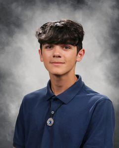

Brayden Winter

Summary
I am a student currently enrolled at NeoCity Academy and strive to always apply myself in my classes and in anything else
I choose to dedicate my time to. I want to be the best version of myself I can be, and I get my motivation and work ethic
from my desire to make my future the best it can be.
Education
- Artificial Intelligence Pathway, NeoCity Academy (2023 - present)
- Additional Online High School Courses, Florida Virtual School / FLVS (2022 - present)
Industry Certifications
- Adobe Certified Professional in Visual Design Using Adobe Photoshop 2023
- Adobe Certified Professional in Graphic Design & Illustration Using Adobe Illustrator 2024
- IT Specialist Device Configuration and Management 2024
Clubs, Extracurriculars, and More
- Flautist in the Harmony High School Concert and Marching Band (2023 - present) and Librarian for the Harmony High School Band (2024 - present)
- Private piano lessons every week (2023 - present)
- Student Ambassador for NeoCity Academy (2024 - present)
- Volunteer Coordinator for the American Red Cross Club (2024 - present)
- President of the sophomore class Student Government Association (SGA) (2024 - present)
Skills
Soft Skills:
- Capable and organized leader
- Communication and Team Collaborating
- Time efficiency and management
Hard Skills:
- Adobe Photoshop
- Adobe Illustrator
- Device Configuration and Management
- Python
- HTML
Awards and Honorifics
- NeoCity Academy Knights of the Round Table 2024 Award; 2 people from each class selected for the award
- Valencia College High School Math Competition 2024 1st Place (Team Round)
- Certificate of Achievement for Perfect Score on the Biology 1 EOC
Contact Me